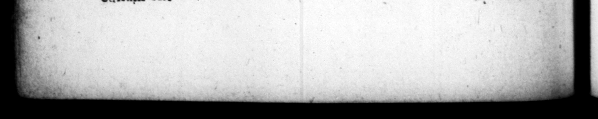

** of ww a SER 8$ULP1CTIU'S3G A EB. tam which time I was ' Neronem ' eſſe jactarot, favorabile nomen <jus apud ” — out 0. Parthos fuir, ut adjutus & vix reddicus ſit. that be was ado, they — a, 3? A 1 fellow of obſture birth gave 29 He met with ſuch 4 favourable reception from the Parthians. very poeerfully ſupported by them, and it was with much ſurrendered him up. 8 ae c SUET. TRANQUILLI, a SERGIUS SULPICIUS GALBA vn. Fes SHEEN . . . K N . 2 K K K K K . & K: 8. br .. SEES AS K 8 . | CAPUT I. | 1 1. c WROGENIES Cx. HE race of the Ceſars was tn 95 ſarum in Neue 578 t inct in Nero, hie had been defecit : quod fu. g intimated before by varia © ©) rutum compluribus 3 6) ferns, but eſpecially two that idem ſignis, ſed evidentiſ- were moſt apparently ſuch. Formerly mis duo us, apparuit, Liviz olim 5 Auguſti ſtatim nuptias Vejentanum ſuum reviſenti, prætervolans aquila, zNinam albam , ramulum uri roſtro renenrem, ita ut rapuerat, di miſit in gremium : cumque nutriri alitem, pangique jamulum placuiſſet, tanta 3 ſoboles provenir, ut odie quoque ea villa ad Ga. linas vocerur : tale vero lauretum, ut triumphaturi Cæſa. res inde laureas decerperent: fuitque mos triumphantibus, alias confeſtim em loco pangere & obſervatum eſt ob cujuſque obitum, arborem ab ipfo inſtitutam, clanguiffe. Ergo noviſſimo Neronis anno, & filva omnis exaruit 1adicitus, & quidquid ibi gallinarum erat, inreritt : ac ſubinde tada de calo Cæſarum ede, capita omnibus fimul ſtatuis dec iderunt: Auguſti · que ſceptrum è manibus excuſſum eſt. 12 their triumphs ha being firuck with — 4 as Livia after her marriage with A. e wes Loing te 4 country ſear of 's near Ni, an Eagle flying by, tet = upon her lap a ben, with 4 bs of laurel in ber mouth, uſt as ſhe b nipped her up. The Lad; gave oder to have the hen alen care of, and the (aurel ſprig jet, and ich a numerous chens came from the hen, that the villa to this day goes by the name of the villa at the Hens, and the laurel ſpread ſo ee, that the Ceſars tbeir laurel crowns. from thence ; and it was 4 cuſiom conſtantly obſerved, to plant others in the place uron that occaſion and notice was talen that a little before the death” of each prince, the tree that had been ſet bim died. But in the laft year of, the whole plantation of Le peri 4 to the very roots, and the # all died, and the temple of the 2. about the fame time, the heads of the ſtatues therein fell off at once; and Auguſtus's ſcepter was daſhed out of his hands, >. Neroni
